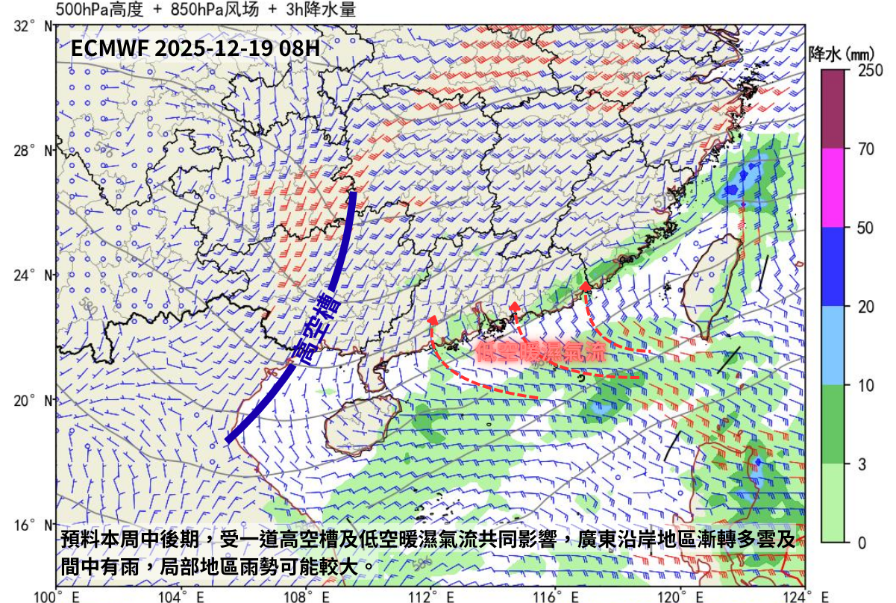

天氣形勢分析（12-16）
發佈時間：2025年12月16日23時15分
現時影響廣東沿岸的東北季候風正逐步緩和，氣溫逐漸回升，但早晚天氣清涼，日夜溫差較大。廣東沿岸仍會受其相關乾燥氣流影響，天氣大致晴朗及乾燥。
預料一股低空暖濕氣流會在星期四稍後抵達廣東沿岸，而一道高空槽亦會在當日逐漸東移接近廣東地區，因此預料在星期四稍後，廣東沿岸漸轉多雲以及有幾陣雨。 受高空槽及低空暖濕氣流共同影響，星期五至星期六上午，廣東沿岸多雲，間中有雨，局部地區雨勢可能較大。隨著高空槽逐步東移遠離廣東地區以及影響廣東 沿岸的低空暖濕氣流逐漸減弱，逐漸轉爲高空槽槽後下沉氣流及較乾燥的低空東北氣流影響，預料在星期六稍後至星期日，廣東沿岸天色好轉。
